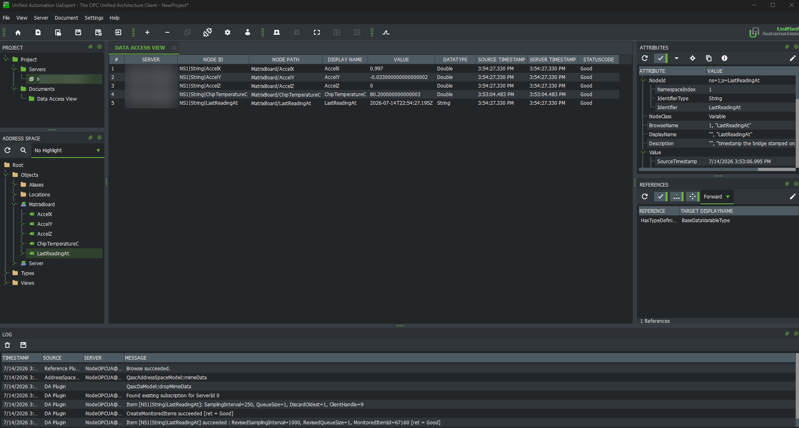

A small but complete industrial-telemetry pipeline built on hardware you can hold. Sensor readings from an ESP32-S3 board are published over MQTT into a C#/.NET service that stores them, and the same readings are re-exposed through an OPC UA server that any standard industrial client can browse. It is the shape of a real manufacturing data platform, in miniature.
One device publishes. A broker routes. Two independent consumers store and re-expose the data. None of them knows the others exist; the broker decouples everything.
Add a third consumer tomorrow and the device's code does not change at all. That decoupling is the point.
Why a broker instead of calling the device directly? Direct calls couple every consumer to the device: each one has to know its address, poll it on its own schedule, and handle its outages. With a broker in the middle, the device publishes once and any number of consumers subscribe, none of them aware of the others. That is why publish/subscribe owns the IoT world.
MQTT and OPC UA are unrelated standards that solve two halves of the same problem. The clearest way to hold them apart is their shape.
Same goal, two shapes. MQTT: announce through a middleman. OPC UA: every machine answers for itself.
The payoff is watching the board's own readings appear in UaExpert, the industry's free reference OPC UA client, with zero custom client code.

UaExpert connected to opc.tcp://localhost:4840, browsing Objects > MatrixBoard. The five nodes read Good, and the accelerometer values update as the physical board is moved. (The server's machine hostname is blurred.)
An honest label: ChipTemperatureC is the temperature of the
ESP32's own silicon, not the room. The board has no ambient temperature sensor, so the value is named
for exactly what it is.
Four small pieces, each started on its own. Node 22.6+ runs the TypeScript directly, no build step.
# 1. broker (Docker Desktop must be running)
docker compose up -d
# 2. bridge: poll the board's HTTP API, publish to MQTT
node bridge/bridge.ts
# 3. historian: subscribe and store every reading in SQLite
dotnet run --project historian
# 4. OPC UA server: re-expose the readings as browsable nodes
node opcua/server.tsThen verify at the destination, never the source's logs: node scripts/dbcheck.js
reads row counts and timestamps straight from the database, and node scripts/opcuacheck.ts
connects the way a real client would and reads live values back.